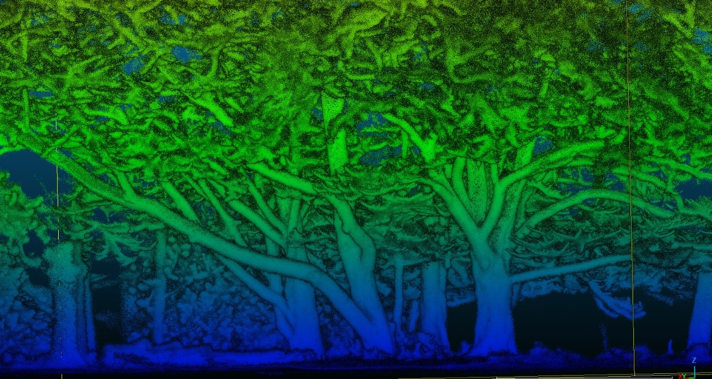

Testing 3D monitoring for practical city tree management
We are working with 3D point clouds, LiDAR sensors, mobile mapping systems, and processing workflows to understand how tree structure can be measured faster, more consistently, and at larger scale.
The Bratislava hackathon is the first implementation testbed. We now want to connect with cities, municipalities, utilities, park managers, and vegetation teams who want to explore how these workflows could support real practice.
Urban trees are three-dimensional living infrastructure
Urban trees provide shade, cooling, carbon storage, biodiversity, stormwater regulation, public-space quality, and many other benefits. These benefits depend strongly on tree structure: stem size, height, crown dimensions, canopy volume, branching architecture, and how trees change through time.
Many existing tree inventories focus on tree location, species, condition, and basic field measurements. These remain essential. The opportunity now is to complement them with faster three-dimensional measurements that can describe more trees, more often, and with richer structural information.
The central question is practical: which 3D sensing systems and workflows can produce information that urban tree managers can actually use?
More trees, more parameters, more repeatable monitoring
3D sensing does not replace professional tree knowledge. Instead, it can help collect structural information faster and more consistently across many trees.
This is especially important for crown-related parameters. Crowns are difficult to measure manually, but they are central to shade, cooling, canopy cover, growth space, pruning, ecological function, and public-space benefits.
The Bratislava testbed will examine whether different sensors and workflows can support practical tree-level outputs: tree detection, catalogues, DBH, height, crown projection, crown width, crown height, and potentially crown volume and biomass-related structure.
Different tree situations, different sensors, different workflows
Urban trees are not measured in ideal laboratory conditions. They grow near roads, buildings, parked cars, pavements, overhead infrastructure, shrubs, benches, people, and other trees. This is why the hackathon will test 3D monitoring across different real-world situations.
Street trees
Individual trees along roads and pavements, including occlusion from traffic, parked cars, street furniture, and buildings.
Park trees
Open-grown trees, mature crowns, tree groups, and sites where crown structure can be more fully captured.
Complex vegetation
Trees with understory, shrubs, overlapping crowns, nearby buildings, and challenging segmentation conditions.
Repeatable workflows
Testing whether outputs can be documented, repeated, compared, and transferred beyond one device or one expert team.
We want management questions from outside Bratislava too
Bratislava is the first implementation testbed, but the solutions must be tested and adjusted in other cities, climates, street layouts, governance systems, and vegetation types.
If you manage urban trees anywhere in Europe or beyond, we would like to understand your needs: which parameters matter, which workflows are realistic, what level of uncertainty is acceptable, and what would make 3D monitoring useful in your organisation.
The aim is not to claim that one universal solution already exists. The aim is to build evidence, protocols, and practical guidance that can be tested, improved, and reused in different city contexts.
Contact: m.mokros@ucl.ac.uk

Calibration and validation for airborne and spaceborne data
Detailed 3D measurements of urban trees are also valuable beyond local tree inventories. They can provide reference information for calibrating and validating airborne LiDAR, drone mapping, aerial imagery, and future spaceborne products.
This matters because city-scale and regional vegetation monitoring increasingly depends on data collected from above. Ground-based 3D measurements can help connect individual-tree structure with larger-scale observations.
In this way, urban tree point clouds can support both practical management and the development of better remote-sensing products for cities.
How urban tree managers can contribute
Share real questions
Tell us which tree parameters, crown measurements, monitoring tasks, or management decisions are most important in your work.
Suggest test cases
Identify tree situations where current inventories or manual surveys are difficult, slow, expensive, or incomplete.
Evaluate outputs
Help us understand whether 3D-derived parameters are understandable, useful, and realistic for operational workflows.
Explore future pilots
Work with us after Bratislava to test adapted workflows in other cities and vegetation-management contexts.